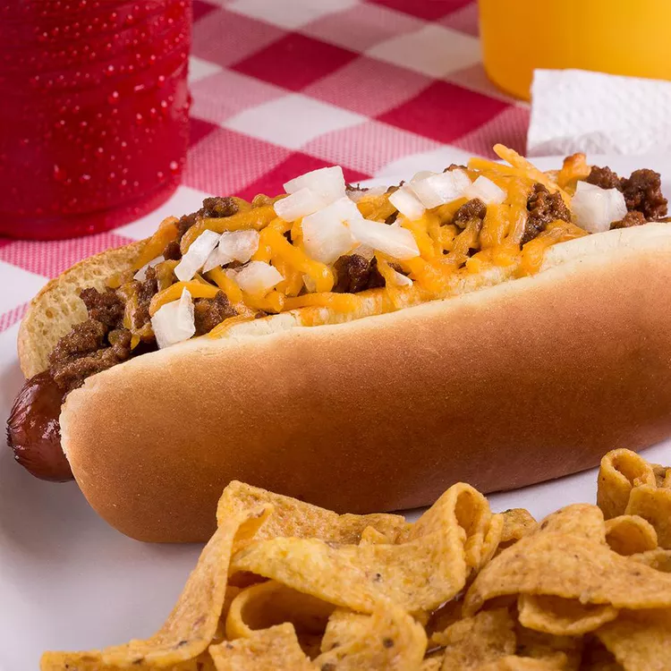

Chili Dog

Description
Need dinner FAST? Craving speed without the energy to run laps? That's no good!
This delicious chili dog recipe takes no time at all and is easier than 3, 2, 1, GO!
Piece of cake!!
Ingredients
- 1 onion
- 8-pack hot dogs
- 8-pack hot dog buns
- 1 can store-bought chili
- 8 oz shredded cheddar, mild or sharp to taste
Steps
- Microwave hot dogs on "High" setting for 2 minutes, proceed to step 2 while they cook
- Set hot dog buns aside, add all other ingredients to blender
- BLEND IT ALL, TIME IS OF THE ESSENCE
- Insert cooked hot dogs into buns, slather with food paste from blender
- EAT IT UP, GOTTA GO FAST!!